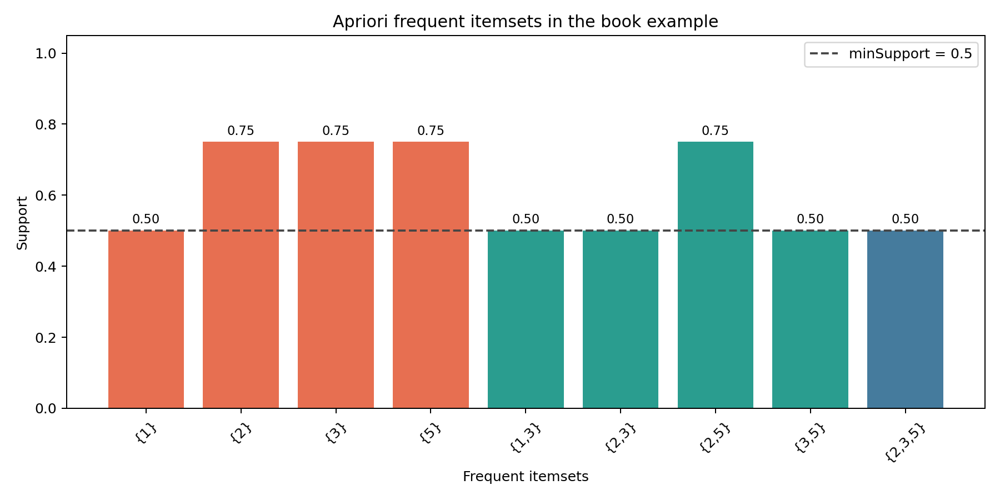

本周复现了《机器学习实战》第11章Apriori关联分析和第12章FP-growth。两个算法都在寻找频繁项集，但路线不同：Apriori不断产生并检查候选组合，FP-growth先把数据压缩成一棵树，再从树中递归挖掘。
这篇复盘主要记录
- 支持度、置信度和频繁项集分别是什么
- Apriori为什么能减少不必要的候选组合
- FP树如何压缩重复的交易前缀
- 两种算法有什么联系和区别
一、关联分析在找什么
超市里有很多购物篮记录。关联分析想回答的不是“这位顾客属于哪一类”，而是“哪些商品经常一起出现”。例如，若买面包的人经常也买牛奶，就可以形成一条规则：
{面包} → {牛奶}
但“出现过”远远不够。组合必须出现得足够频繁，规则也必须足够可靠，这就需要支持度和置信度。
二、支持度与置信度
支持度表示某个项集在全部交易中出现的比例：
support(X) = 包含X的交易数 / 全部交易数
置信度表示在已经出现X的交易中，同时出现Y的比例：
confidence(X→Y) = support(X∪Y) / support(X)
生活化地说，支持度回答“这组搭配常不常见”，置信度回答“买了前面的东西后，后面的东西有多大概率也出现”。两者不是一回事。
三、Apriori最重要的先验性质
如果一个项集是频繁的，那么它的所有子集也一定频繁；反过来，只要某个子集不频繁，包含它的更大项集就不可能频繁。
假设“面包和牛奶”都很少一起出现，那么“面包、牛奶和鸡蛋”只会更少，不必再扫描数据验证。Apriori就是利用这一点，按层次生成候选项集：
候选1项集 → 频繁1项集
频繁1项集 → 候选2项集 → 频繁2项集
频繁2项集 → 候选3项集 → 频繁3项集四、书中数据的真实结果
书中的交易记录为：
[[1, 3, 4],
[2, 3, 5],
[1, 2, 3, 5],
[2, 5]]设置最低支持度为0.5后，共留下9个频繁项集：4个频繁1项集、4个频繁2项集和1个频繁3项集。其中{2,5}支持度为0.75，{2,3,5}支持度为0.5。

五、从频繁项集生成关联规则
频繁项集只说明组合常见，还没有方向。对于{2,5}，可以尝试两条规则：{2}→{5}和{5}→{2}。本次最低置信度设置为0.7，得到3条规则：
{1} → {3}，置信度 1.000
{5} → {2}，置信度 1.000
{2} → {5}，置信度 1.000置信度为1只表示这4条示例交易中没有反例。样本很少，所以不能把它直接解释成现实世界里100%成立。
六、Apriori为什么可能很慢
商品种类增加后，可能组合的数量增长得非常快。Apriori每生成一层候选项集，都要再次扫描数据统计支持度。先验性质已经过滤了很多组合，但数据量和项目数很大时，候选集仍可能很多。
七、FP-growth怎样减少重复扫描
FP-growth不再逐层产生大量候选项集，而是先统计频率、去掉不频繁项，再把每条交易按全局频率排序并插入FP树。不同交易相同的开头会共享树节点，因此可以压缩数据。
FP树节点保存：
- 项目名称和计数；
- 父节点和子节点；
- 指向树中下一个同名节点的节点链接。
头指针表则把相同项目的节点串起来，方便快速找到它在树中的所有位置。
八、条件模式基和条件FP树
挖掘某个项目时，要从它的每个节点向上回溯到根节点。得到的前缀路径及计数组成条件模式基。再用条件模式基创建一棵更小的条件FP树，递归寻找与该项目共同出现的频繁组合。
可以把它类比成：先锁定“买了牛奶”的购物篮，只保留牛奶之前的有效商品，再在这个缩小后的世界中继续寻找规律。
九、两种算法怎样比较
| 方面 | Apriori | FP-growth |
|---|---|---|
| 共同目标 | 寻找频繁项集 | 寻找频繁项集 |
| 主要方法 | 逐层生成候选项集 | 构建FP树并递归挖掘 |
| 优点 | 过程直观，容易理解 | 避免产生大量候选集 |
| 难点 | 候选组合可能爆炸 | 树和递归过程较难理解 |
FP-growth不是用来直接生成关联规则的新指标，它首先更高效地寻找频繁项集。得到频繁项集后，仍可以按支持度和置信度生成规则。
十、与书上源码不同的地方
- Python 2的
print改成当前Python可运行的写法。 map显式转换为列表，适配Python 3迭代器行为。- 字典遍历和排序改成Python 3支持的形式。
- 创建FP树初始字典时，相同交易使用累加计数，避免书中直接赋值造成重复记录被覆盖。
- 增加中文注释、独立案例入口和自动测试，算法主线及书中示例数据保持一致。
十一、目前还不熟的地方
- 候选集连接。低阶项集能跟下来，高阶项集的连接、去重和剪枝仍容易混乱。
- 规则是否有价值。支持度和置信度达到阈值，不代表现实中一定有因果关系。
- 条件FP树。能跟着代码运行，但节点链接、前缀路径和递归返回仍需要手画一遍。
十二、下周计划
- 01配置PyTorch环境
检查PyTorch版本、CPU和GPU状态。
- 02学习张量操作
完成创建、变形、广播、索引和数据预处理。
- 03复习线性代数
区分按元素乘法、点积和矩阵乘法。
- 04学习自动求导
理解计算图、backward、梯度累积和detach。
十三、第九周最值得保留的认识
频繁项集支持度置信度先验性质FP树
Apriori利用先验性质逐层筛选频繁项集，再用支持度判断组合是否常见、用置信度评价规则；FP-growth则使用FP树压缩重复路径，减少候选项集带来的开销。
这一周最重要的变化，是开始从“预测一个结果”转向“发现数据中共同出现的模式”。